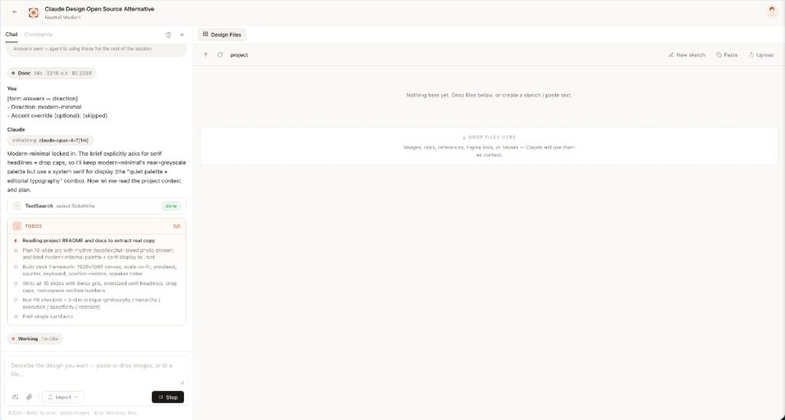

LIVING SPECS19 · LIVING SPEC · SPEKIN
ADRs and glossary
Extends: New. Spekin has no built screen yet. Expert layer records; wraps S08 (proposal review) for every change.
Lives in: Spekin web app · /p/meranti-yard/spec/records?type=glossary (type and record id in the query).
NEW
NEWSaved 12:52
NEW
RS
NEW
NEW
Expert layerGlossaryGlossary
5 terms · accepted r14NEW
| Term | Aliases | Bounded context | Meaning | Rev |
|---|---|---|---|---|
| ForecastPerkiraan | EAC, cost-to-complete | Cost control | The latest estimate of what a package will cost when finished. | r10 |
| VarianceSelisih | Delta | Cost control | Forecast minus budget for one package, as a number and a percent. | r10 |
| PackagePaket kerja | Work package, WP | Cost control | A priced slice of the yard works, such as Jacket fabrication. | r8 |
| PeriodPeriode | Cost period | Reporting | One calendar month of the monthly cost export. | r8 |
| ThresholdAmbang batas | Alert limit | Alerts | The percent over budget at which a package is flagged. | r14 |
NEW
Forecast · PerkiraanGLO-02 · meaning only, no field names or code
- Aliases
- EAC, cost-to-complete
- Context
- Cost control only. In Alerts, "limit" is used instead.
Glossary holds meaning, aliases and context. A new alias or term arrives as a Proposal, never as an inline write.
NEW
NEWSaved 12:52
NEW
RS
NEW
NEW
Expert layerADRsArchitecture decision records
NEW
Records
ADR-003Store money as integer minor unitsr12 · PRN-1Accepted
ADR-004Variance is computed on the serverr13 · R-DASH-014Accepted
ADR-005Thresholds are per package, with a project defaultbase r14 · R-DASH-017Proposed
ADR-002Show variance in USD millions onlyr7 · R-DASH-009Superseded by ADR-006
ADR-006Show variance in the package currency, USD as the totalr11 · R-DASH-009Accepted
ADR-003 · Accepted r12R-DASH-014PRN-1
- Context
- Forecasts arrive from the cost export as decimals. Summing rounded values drifted by 0.02 USD m on Jacket fabrication.
- Alternatives
- Floating point (rejected: drift)
Decimal strings (rejected: slow to sum)
Integer minor units (chosen) - Decision
- Store every money value as an integer count of cents. Round only when drawing a number.
- Consequences
- Import needs a conversion step. Reports can not show sub-cent values. Linked requirement: R-DASH-014.
NEW
Supersession
ADR-002 · SupersededADR-006 · Accepted r11The earlier record stays readable.
ADRs exist only for hard-to-reverse trade-offs. Superseded records stay readable with a link forward.
NEW
NEWSaved 12:52
NEW
RS
NEW
NEW
Expert layerProposal P-33Proposal P-33
Base r14NEW
- Source
- Chat · message 4 · Rina asked if "forecast" and "EAC" are the same
- Affects
- GLO-02 Forecast R-DASH-014 F-03
- Base revision
- r14 · current
NEW
GLO-02 Forecast · aliasesWill accept
Aliases: cost-to-complete EAC, cost-to-complete
ADR-005 · new record, ProposedLeft out
Thresholds are per package, with a project default. Alternatives: one global value; per user. Consequence: harder to change later, because stored alerts keep their threshold.
NEW
Routine choice, no ADRcolumn order in the variance table
Easy to reverse and not surprising, so Spekin did not ask for a record.
Source, affected IDs, base revision are on every proposal, so the reviewer sees why it exists.
Accept one hunk: only the alias lands, in one new revision. The ADR hunk stays out, and no code is renamed.
NEW
NEWSaved 12:52
NEW
RS
NEW
NEW
Expert layerGlossaryGlossary
1 contradictionNEW
| Term | Aliases | Bounded context | Meaning | Rev |
|---|---|---|---|---|
| ForecastPerkiraan | EAC, cost-to-complete | Cost control | The latest estimate of what a package will cost when finished. | r10 |
| VarianceSelisih | Delta | Cost control | Forecast minus budget for one package, as a number and a percent. | r10 |
| PackagePaket kerja | Work package, WP | Cost control | A priced slice of the yard works, such as Jacket fabrication. | r8 |
| PeriodPeriode | Cost period | Reporting | One calendar month of the monthly cost export. | r8 |
| ThresholdAmbang batas | Alert limit | Alerts | The percent over budget at which a package is flagged. | r14 |
NEW
Contradiction with GLO-05 Threshold
Your new meaning is "the most rows shown". GLO-05 says a threshold is the percent over budget that flags a package.
Check contradictions runs against all terms and ADRs. Spekin names the clash and offers three ways out.
NEW
NEWSaved 12:52
NEW
RS
NEW
NEW
Expert layerProposal P-34Proposal P-34
StaleNEW
Accept is blocked until you rebase
Another Proposal changed R-DASH-017 in r15. This ADR cites it, so the base must be refreshed first.
NEW
The earlier record is still readable
ADR-002Show variance in USD millions onlyr7 · R-DASH-009Superseded by ADR-006
ADR-006Show variance in the package currency, USD as the totalr11 · R-DASH-009Accepted
ADR-002ADR-006ADR-007 proposed
No code is renamed by any of these records.
Stale base: Accept is disabled and says why. Rebase shows what changed; nothing is accepted for you.
What it must show
- The glossary lists each term in Bahasa and English with aliases, bounded context and domain meaning only, with its revision.
- An ADR shows status, context, alternatives, decision, consequences, linked requirements and supersession links.
- A clarified term or a consequential decision becomes a Proposal with its source, affected IDs and base revision. Nothing is written inline.
- Accepted records change only through a reviewed Proposal; each hunk can be accepted alone, and no code is renamed.
- New terms and ADRs are checked against existing ones; a contradiction is named and offers ways out.
- A stale base blocks Accept until rebased. An earlier ADR stays readable. Routine choices need no ADR.
Motion
Record switchGlossary and ADRs cross-fade 160 ms, ease cubic-bezier(0.23,1,0.32,1).
Hunk acceptThe hunk tint changes in 140 ms; the count on the review bar counts up 120 ms.
Contradiction cardEnters with a 4 px rise in 220 ms; the clashing row gets a tint at the same time.
Supersession chainChips reveal left to right, 40 ms apart.
Disabled AcceptNo shake. The reason text is announced as a status.
Reduce MotionAll swaps are instant. Status changes are still announced.
Stories
F461PRDNew
Glossary table: term in Bahasa and English, aliases, bounded context, meaning, revision (R-STD-2).F462PRDNew
Term detail states domain meaning and context, not implementation instructions (R-STD-2).F463PRDNew
ADR list and detail: status, alternatives, rationale, consequences, linked requirements (R-STD-2).F464PRDNew
Supersession chain; the earlier ADR stays readable (R-STD-2, AC-SPK-34).F465PRDNew
A clarified term or consequential decision becomes a Proposal with source, affected IDs and base revision (R-STD-2).F466PRDNew
Per-hunk accept: only the alias lands in one valid revision; no code rename (R-STD-2).F467PRDNew
Contradiction check against existing terms and ADRs (R-STD-2).F468PRDNew
A stale base blocks Accept until rebased (R-STD-2, AC-SPK-34).F469PRDNew
Routine choices get no mandatory ADR; the screen says so (R-STD-2).Shared shell controls on this board, specified on S35:
F101NewF102NewF103NewF104NewF106NewF107NewF109NewF111NewF112NewF114NewF115New
Where it lives
Route:
/p/:project/spec/records, type and record id in the query.UI units: PRD components/definitions-table and components/feed-list; OpenDesign InlineDiff pattern (Apache-2.0, NOTICE for code reuse).Rust core owns: term and ADR records with aliases and supersession, the contradiction check, and the base-revision guard in proposals.Open decisions: whether the contradiction check is a model call or a rule on aliases and contexts (recommended: rules first, model for meaning).States
- Glossary · Entry: Projects > Meranti Yard > Specification > Expert > Glossary. · Data: sample/parts/gap-b.mjs → GAPB_TERMS.
- ADRs · Entry: Specification > Expert > ADRs. · Data: sample/parts/gap-b.mjs → GAPB_ADRS, GAPB_ADR3.
- Proposed from chat · Entry: Specification > chat: ask "Is forecast the same as EAC?"; open Proposal P-33. · Data: sample/parts/gap-b.mjs → GAPB_PROPOSAL, GAPB_TERMS, GAPB_ADRS.
- Contradiction · Entry: Glossary > chat: define "threshold" as a row limit. · Data: sample/parts/gap-b.mjs → GAPB_TERMS (Threshold).
- Stale ADR proposal · Entry: Specification > Proposal P-34 after spec r15 was accepted. · Data: sample/parts/gap-b.mjs → GAPB_ADRS (ADR-002, ADR-006).
Reference: the original UIPRD component picks and OpenDesign diff patterns. Paraframe and Momo are pattern references only.

